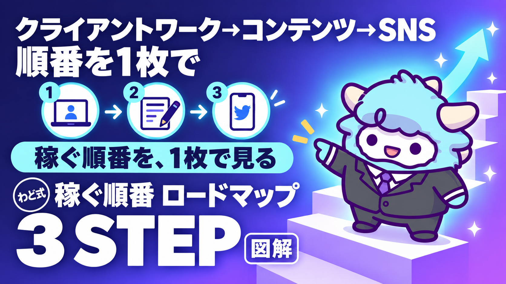

稼ぐ順番 3STEP ロードマップ図解
クライアントワーク→コンテンツ→SNS・ローンチ。1枚で全体、3枚で各段
このページが特典の本体です。下へスクロールして使ってください稼ぐ順番 3STEP ロードマップ図解
AI×コンテンツで収入をつくる道を、1枚の全体図と3枚の詳細図で「今どこにいて、次に何をすればいいか」が分かる状態にします。
はじめに
わどです。この特典は「AIで稼ぐには、何から始めればいいか分からない」という悩みに対して、答えを1つの言葉で渡すためのものです。
答えは「順番」です。
AIで収入をつくろうとする人のほとんどは、能力が足りないのでも、やる気が足りないのでもありません。正しい手順を、正しい順番で踏んでいないだけです。とくに多いのが、いきなり発信から始めてしまうパターンと、いきなり自分の商品を作ろうとしてしまうパターンです。どちらも、土台になる経験が無いまま次の段階に手を出しているので、時間をかけても積み上がりません。
この特典では、AIで稼ぐ道のりを3つの段階(STEP)に分け、それぞれの「やること」「終わりの合図」「次に進んでいい条件」を1枚の見取り図にしました。図はスライド(PDF)と画像で渡します。このページには、その図の文章版と、図を作るための元原稿(Marp形式)、そして自分の現在地を図に当てはめるための質問をまとめています。
この特典の進め方
- まず「最初のゴール」だけをやってください。今の自分がどのSTEPにいるかを、1行で書き出すだけです。
- 次に「2. 全体図」を読んで、3つのSTEPの関係をつかみます。ここは飛ばさずに読んでください。全体像を知らないまま各STEPを読むと、今いる場所の意味が分からなくなります。
- 自分が今いるSTEPの章(3・4・5のどれか)を、詳しく読みます。他のSTEPは、今は流し読みで構いません。
- 「7. 自分の現在地を図に当てはめるプロンプト」を使って、AIと一緒に自分の状況を整理します。
- 迷ったときは「つまずいたときに聞くプロンプト」を使ってください。
最初のゴール(今日やる1つ)
今日やることは1つだけです。
「自分は今、STEP1・STEP2・STEP3のどこにいるか」を1行で書いてください。
正解を出す必要はありません。「たぶんSTEP1の途中」「まだどれも始めていない」で十分です。ここが定まっていないと、この先の章をどう使えばいいか判断できません。書けたら次の章に進んでください。
1. なぜこの順番か(逆にすると起きること)
3STEPの順番は、クライアントワーク → コンテンツ化 → SNS・ローンチ、です。逆から始めようとすると、次のようなことが起きます。
発信(SNS)から始めてしまう場合
まだ実績も経験もない状態で発信を始めると、書くことがすぐに尽きます。ノウハウの受け売りか、抽象的な精神論しか書けなくなり、フォロワーは増えても「この人から学びたい」という反応にはつながりません。発信は本来、自分が実際にやったことを伝える場所です。やったことが無い段階で発信を続けても、土台のない家を大きくしているだけになります。
コンテンツ(商品)から始めてしまう場合
実際にクライアントの課題を解決した経験がないまま講座や有料コンテンツを作ろうとすると、中身が一般論になります。「こうすればうまくいくはずです」という仮説だけの商品は、買った人の反応が悪く、次に何を改善すればいいかも分かりません。コンテンツは、実際にやって結果が出たことを型にする作業です。型にする元(経験)が無いと、コンテンツ自体が空洞になります。
正しい順番で進めるとどうなるか
STEP1で得た「実際にやって結果が出た経験」が、STEP2の「コンテンツの中身」になります。STEP2で作ったコンテンツが、STEP3の「発信で伝えるもの」になります。つまり、後の段階の材料は、すべて前の段階から生まれます。順番を守ることは、遠回りではなく、いちばんの近道です。
2. 全体図の文章版(1枚の見取り図)
3STEPの全体像を、表にまとめます。詳しい内容は3・4・5章で説明します。
| STEP | 呼び名 | ゴール | 主な行動 | 次のSTEPへの橋渡し |
|---|---|---|---|---|
| STEP1 | 最初の1件 | クライアントワークで実際に結果を出す | AIを使って人の仕事を引き受け、納品まで完了させる | 納品した仕事の中身が、STEP2の題材になる |
| STEP2 | 経験のコンテンツ化 | 自分の経験を、人に渡せる形に変える | 有料記事・講座・サポートなど、再現できる形に落とし込む | 作ったコンテンツが、STEP3で発信する中身になる |
| STEP3 | SNS・ローンチ | 届く人数を増やし、売上を繰り返せる仕組みにする | 発信で認知を広げ、登録・予約・参加・購入までの流れを作る | (この先は、STEP1・STEP2をより大きな規模で回す) |
見取り図として持っておいてほしいのは、この3つが「階段」ではなく「循環」だということです。STEP3まで進んだあとも、STEP1に戻って新しい経験を積む場面があります。3STEPは1回だけ通る道ではなく、規模を上げながら何度も回すものだと考えてください。
3. STEP1 クライアントワークの段
STEP1のゴールは、「AIを使って人の仕事を引き受け、実際に納品を完了させる」ことです。稼ぐことよりも、経験を持ち帰ることが目的です。
何をするか
- 自分が今できること(得意なこと・興味のあること)を、人の役に立つ形で言葉にする
- AI(ChatGPT・Gemini・Claudeのどれでも構いません)を使って、作業のスピードと質を上げる
- 小さくてもいいので、最初の1件を引き受け、期限どおりに納品する
- 納品の過程で「何に時間がかかったか」「相手が何を喜んだか」を記録しておく
終わりの合図
以下の3つが揃ったら、STEP1は一区切りです。
- 最初の1件を、実際に納品し終えている
- 「何をどう作ったか」を、他人に説明できる状態になっている
- 依頼を受けたときに使った手順(プロンプト・進め方)が、自分の中に型として残っている
次のSTEP2へ進む条件
STEP1を何件も繰り返す必要はありません。1件でも「説明できる経験」ができていれば、STEP2に進んで構いません。逆に、件数を重ねても「毎回やり方が違う」「振り返っていない」状態であれば、STEP1に留まって型を作ることを優先してください。
4. STEP2 コンテンツの段
STEP2のゴールは、「STEP1で得た経験を、自分以外の人が使える形に変換する」ことです。ここでの主語は「自分がやったこと」から「相手が使えること」に切り替わります。
何をするか
- STEP1の経験から、「同じ悩みを持つ人が、他にもいそうか」を考える
- その悩みに対して、有料記事・ミニ講座・個別サポートなど、渡す形を1つ選ぶ
- 自分がやった手順を、相手が真似できるレベルまで分解する
- 一部の人に試してもらい、反応を見て直す
終わりの合図
以下の3つが揃ったら、STEP2は一区切りです。
- 「人の仕事」だった経験が、「自分の商品」の形になっている
- 実際に誰かに渡して、感想やフィードバックをもらっている
- 自分の言葉で、その商品の内容を説明できる
次のSTEP3へ進む条件
コンテンツが完璧である必要はありません。「渡せる形になっていて、実際に誰かに渡した経験がある」状態になったら、STEP3に進んで構いません。逆に、頭の中で構想だけが完成していて、誰にも渡していない状態であれば、まず1人にでも渡すことを優先してください。
5. STEP3 SNS・ローンチの段
STEP3のゴールは、「STEP2で作ったコンテンツを、より多くの人に届け、売上を繰り返せる仕組みにする」ことです。ここで初めて発信・集客・販売という言葉が意味を持ちます。
導線の型
STEP3の中身は、次の5つの流れで考えると整理しやすくなります。
| 段階 | 意味 | この段階でやること |
|---|---|---|
| 認知 | 存在を知ってもらう | SNS発信・記事投稿で、STEP2の中身を少しずつ見せる |
| 登録 | 連絡が取れる状態にする | メールアドレスやLINEなど、続けて連絡できる場所に来てもらう |
| 予約 | 具体的な行動の約束をしてもらう | セミナーや個別相談など、次の接点に申し込んでもらう |
| 参加 | 実際に会う・話す | 約束した接点に、実際に参加してもらう |
| 購入 | 商品・サービスを届ける | STEP2で作ったコンテンツを、正式に届ける |
大事なのは、この5段階を一気に飛ばそうとしないことです。認知した相手にいきなり購入を迫ると、ほとんどの場合うまくいきません。登録→予約→参加という橋渡しを1段ずつ用意することで、初めて購入まで自然につながります。
終わりの合図と、その先
STEP3に「終わり」はありません。認知から購入までの流れが1回できたら、それを繰り返し、STEP1で新しい経験を積みながら、STEP2でコンテンツを増やし、STEP3の流れをより太くしていきます。3STEPは、螺旋階段のように同じ形を繰り返しながら、少しずつ規模を上げていくものだと考えてください。
6. スライド原稿(Marp形式)
以下は、この3STEP図をスライドにするための元原稿です。ご自身の発表資料や、振り返り用のノートとしてそのまま使えます。テキストエディタに貼り付ければ、Marp対応のツールでスライド化できます。
---
marp: true
theme: default
paginate: true
---
# 稼ぐ順番 3STEP ロードマップ
稼ぎ方より、稼ぐ順番。
AI × コンテンツで収入をつくる、3つの段階。
---
# なぜ「順番」が大事なのか
- 発信から始めると、書くことがすぐに尽きる
- 商品から始めると、中身が一般論になる
- 後の段階の材料は、すべて前の段階から生まれる
- 順番を守ることが、いちばんの近道
---
# 全体像:3つの段階
1. STEP1 最初の1件(クライアントワーク)
2. STEP2 経験のコンテンツ化
3. STEP3 SNS・ローンチで規模を上げる
前の段階が、次の段階の材料になる。
---
# STEP1:最初の1件
- AIを使って人の仕事を引き受ける
- 期限どおりに納品を完了させる
- 「何にどう時間を使ったか」を記録する
- ゴールは稼ぐことより、説明できる経験を持ち帰ること
---
# STEP1の終わりの合図
- 最初の1件を、実際に納品し終えている
- 他人に説明できる状態になっている
- 使った手順が、自分の中に型として残っている
---
# STEP2:経験のコンテンツ化
- 同じ悩みを持つ人が、他にもいそうか考える
- 有料記事・講座・サポートなど、渡す形を1つ選ぶ
- 手順を、相手が真似できるレベルまで分解する
- 一部の人に試してもらい、反応を見て直す
---
# STEP2の終わりの合図
- 「人の仕事」が「自分の商品」の形になっている
- 実際に誰かに渡し、感想をもらっている
- 自分の言葉で内容を説明できる
---
# STEP3:SNS・ローンチ
認知 → 登録 → 予約 → 参加 → 購入
- 一気に飛ばさず、1段ずつ橋渡しを用意する
- 認知した相手にいきなり購入を迫らない
- STEP2の中身を少しずつ見せていく
---
# 3STEPは循環する
- STEP3まで進んだあとも、STEP1に戻る
- 経験 → コンテンツ → 発信 を繰り返す
- 同じ形を繰り返しながら、規模を上げていく
---
# 今日やること
自分は今、STEP1・STEP2・STEP3のどこにいるか。
1行で書き出すところから始める。
7. 自分の現在地を図に当てはめるプロンプト
3STEP図に、自分の状況を当てはめるためのプロンプトです。AI(ChatGPT・Gemini・Claudeのどれでも)に貼り付けて使ってください。
あなたはキャリア・副業設計のアドバイザーです。
以下の「稼ぐ順番3STEP」に、私の現在の状況を当てはめて整理してください。
# 3STEPの定義
- STEP1(最初の1件):AIを使って人の仕事を引き受け、実際に納品を完了させる段階
- STEP2(経験のコンテンツ化):STEP1の経験を、有料記事・講座・サポートなど人に渡せる形にする段階
- STEP3(SNS・ローンチ):認知→登録→予約→参加→購入の流れを作り、規模を上げる段階
# 私の状況
- 今できること・興味があること:[ここに書く]
- これまでにやったこと(仕事・副業・発信の経験):[ここに書く]
- 今つまずいていること:[ここに書く]
# お願いしたいこと
1. 私が今、STEP1・STEP2・STEP3のどこにいるかを判定してください。根拠も添えてください。
2. 今のSTEPで「終わりの合図」に足りていないことを、具体的に3つ挙げてください。
3. 次に取るべき最初の1歩を、今日中にできる粒度で1つ提案してください。
最初に投げるプロンプト
まだ何も手を付けていない場合は、以下から始めてください。
あなたは副業・スキマ時間の収入づくりに詳しいアドバイザーです。
私は「AIを使って人の仕事を引き受け、最初の1件を納品する」というSTEP1に取り組みたいと考えています。
私の状況:
- 得意なこと・興味のあること:[ここに書く]
- 使える時間(週あたり):[ここに書く]
- 経験の有無(過去に人から仕事を受けたことがあるか):[ここに書く]
この状況をふまえて、
1. 私が最初に引き受けられそうな仕事の種類を3つ提案してください。
2. それぞれについて、AIをどう使えば作業を進められるか、具体的な手順を教えてください。
3. 最初の1件を探すために、今日中にできる行動を1つ教えてください。
よくある失敗 7つと直し方
| 失敗 | 何が起きるか | 直し方 |
|---|---|---|
| 1. STEP3(発信)から始める | 書くことがすぐ尽きる、反応が続かない | STEP1に戻り、まず1件の経験を作る |
| 2. STEP2(商品化)から始める | 中身が一般論になり、誰にも刺さらない | 実際にやった経験を先に1つ作ってから商品化する |
| 3. STEP1を何件やっても振り返らない | 毎回やり方が違い、型が残らない | 1件ごとに「何に時間がかかったか」を記録する |
| 4. 完璧な商品ができるまで誰にも見せない | 反応が分からず、直す材料がない | 一部の人にだけでも早めに渡し、感想をもらう |
| 5. 認知した相手にいきなり購入を迫る | 反応が悪く、機会を失う | 登録→予約→参加の橋渡しを1段ずつ用意する |
| 6. 3STEPを1回きりの道だと思ってしまう | STEP3のあと、何をすればいいか分からなくなる | STEP3のあとはSTEP1に戻り、循環させる |
| 7. 自分の現在地を確認せずに進める | 今のSTEPに合わない行動を取ってしまう | 定期的に「7. 自分の現在地を図に当てはめるプロンプト」で確認する |
安全に使うための注意
- この図は、収入を保証するものではありません。記載の内容は取り組み方の順番を示すものであり、成果には個人差があります。
- クライアントワークを引き受ける際は、契約内容・納期・報酬の取り決めを、口頭ではなく文章で残してください。
- AIに相手の個人情報や機密情報(氏名・連絡先・契約書の原文など)をそのまま貼り付けないでください。
- AIが出した提案(契約文言・見積もり・法律や税金に関わる判断)は、そのまま使わず、必要に応じて専門家に確認してください。
- コンテンツ化(STEP2)の際、他者の著作物や実績を無断で使わないでください。自分の経験に基づいて書くことが基本です。
- 発信(STEP3)では、事実と推測を分けて書いてください。確認していない数字や成果を断定して書かないでください。
つまずいたときに聞くプロンプト
どのSTEPにいても、行動が止まってしまったときはこのプロンプトを使ってください。
あなたは行動の停滞を解消するコーチです。
私は「稼ぐ順番3STEP」の[STEP1/STEP2/STEP3のどれかを書く]で止まっています。
止まっている理由として思い当たること:[ここに書く]
直近1週間でやったこと:[ここに書く]
以下を教えてください。
1. 私が止まっている本当の原因は何だと考えられますか。
2. 今のSTEPに留まるべきか、前のSTEPに戻るべきか、判断してください。理由も添えてください。
3. 今日中にできる、いちばん小さい次の一歩を1つ提案してください。
用語集
- クライアントワーク:人や会社から依頼を受けて行う仕事のこと。STEP1の中心的な行動です。
- コンテンツ化:自分の経験ややり方を、記事・講座・サポートなど、他人が受け取れる形に変換すること。
- ローンチ:新しい商品やサービスを、期間を区切って集中的に案内し、販売する一連の流れのこと。
- 認知・登録・予約・参加・購入:STEP3で人が商品にたどり着くまでの5段階。この順で橋渡しを作ります。
- 0→1:まだ何も実績が無い状態から、最初の1つの実績・経験を作ること。
- 型:同じ作業を繰り返し行えるように、手順を再現可能な形にまとめたもの。
出す前の品質チェック(10項目)
STEP1〜STEP3のどこかで「人に渡すもの」を作ったら、公開・納品する前に以下を確認してください。
- 相手が受け取ったあと、何ができるようになるかが明確か
- 事実と推測が分けて書かれているか(断定していい数字か確認したか)
- 他者の著作物・実績を無断で使っていないか
- 個人情報・機密情報が誤って含まれていないか
- 相手が読んで、次に何をすればいいか分かる構成になっているか
- 専門用語を使う場合、説明を添えているか
- 契約・納期・金額に関わる内容は、文章で明確に残しているか
- 「必ず」「絶対に」など、保証できない断定表現を使っていないか
- 一度、自分以外の誰か(またはAI)に読んでもらい、分かりにくい箇所を確認したか
- 公開・送付する前に、誤字脱字と表記のゆれを確認したか
最新AI（2026年9月時点）でこの特典はどう変わるか
この特典では: 順番は変わりません。新しいモデルで速くなるのは各 STEP の中の作業で、STEP を飛ばす道具ではありません。
2026年9月の第1週に、主要な AI が続けて更新されました。この特典の手順は変わりませんが、次の3点を知っておくと手数が減ります（2026年9月6日時点の公開情報です。提供状況は変わるので、使う前に各社の公式サイトで確かめてください）。
- GPT-6 Astra（OpenAI・2026年9月3日発表）: 画面の情報を読み取り、アプリを人間と同じ画面経由で動かす「コンピュータ操作」が主機能になりました。フォーム入力・表計算・資料づくりのような「手順が決まっている作業」を任せやすくなります。ただし段階的な提供の途中で、自分のアカウントにまだ出ていないことがあります。画面に映った文章をそのまま指示として読むことがあるので、AI に画面を触らせるときは「映すものを選ぶ」を守ってください。
- Claude Fable 5.1（Anthropic・2026年9月1日発表）: 数時間から数日にわたる、複数アプリをまたぐ作業を最小限の監督で回すための最上位モデルです。この特典の作業は Sonnet／Opus で足ります。「何日もかかる仕事を丸ごと任せる」段階になってから検討してください。Claude Code の導入は特典「Claude Code 最初の30分」で扱っています。
- AI社員: 上の2つが向いている先は同じです。「毎回同じ指示を書かなくていい担当」を1人ずつ増やす形が、個人でも現実になりました。この特典のプロンプトやシステム指示は、そのまま AI社員の「指示書」の1枚になります。つくり方は特典「AI社員1人目のつくり方」で扱っています。
モデルの差で成果は決まりません。何に使うかで決まります。この特典の手順を1周してから、新しいモデルを試してください。
最終チェックリスト
この特典を使い終える前に、以下を確認してください。
- [ ] 自分が今、STEP1・STEP2・STEP3のどこにいるかを1行で書き出した
- [ ] 「2. 全体図」の表を読んで、3STEPの関係(前の段階が次の材料になること)を理解した
- [ ] 今いるSTEPの「終わりの合図」を確認した
- [ ] 今いるSTEPの「次のSTEPへ進む条件」を確認した
- [ ] 「7. 自分の現在地を図に当てはめるプロンプト」を、実際にAIに投げてみた
- [ ] 「安全に使うための注意」を読んだ
- [ ] 今日中にできる、いちばん小さい次の一歩を1つ決めた